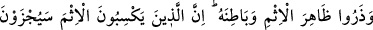
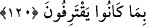

olarak yarattığımızı ve sizin bize döndürülüp getirilmeyeceğinizi mi sandınız?” (el-
Mü’minûn, 23/115)
Aynı şekilde ukbâ ehli, Mevlâ ehline nisbetle hevâ ehli sayılır. Çünkü Mevlâ ehli
olanlar, dünya ve ahiretle ilgili bütün arzulardan sıyrılmışlardır. Onlar, vuslat ve ayrılık
düşüncesinden geçmişlerdir. Cenab-ı Hakk’tan başka hiçbir şeye nazar etmezler.
Muhammediye müellifi Yazıcızâde der ki:
Dergâhının bağlıları için her iki âlem de bir anlıktır
Huzurunun âşıkları için cennet hurileri üzüntü verir
Allah, ahiret ehline dünyayı, dünya ehline de ahireti haram kılmıştır. Ve bunların her
ikisini de ehlullaha haram kılmıştır. Ancak dünyadan açlığını giderecek kadar yiyen ve
avretini örtecek kadar giyen, dünya ehlinden değildir. Çünkü bunlar, beşeriyet îcâbı
zaruri ihtiyaçlardır. İşin aslı bedenin muhafazası için Allah Teâlâ’nın bu konuda izni
vardır.
“Allah’ın ayetlerine inanıyorsanız, üzerine O’nun adı anılanlardan yeyin.” ayetinin
işârî yorumu şöyledir:
Tabîata göre değil şer‘-i şerîfin hükmünce yemek yemeniz ve onu Allah’ı zikrederek
eritmeniz îmanın alâmetlerindendir. Nitekim Hz. Peygamber (a.s.): “Yemeğinizi Allah’ı
zikrederek eritiniz.”[159] buyurmuştur. Çünkü gaflet ile ve Allah unutularak, günah
işlemeye güç elde etmek için yemek, kalbin ölümüne ve cennetten mahrûmiyete sebep
olur.
Bu hadis, cehrî zikrin meşruiyetine işaret eder. Çünkü cehrî zikir ile yemek daha iyi
erir. Yine yemekten sonra iki rekat namaz kılmak veya Kur’an’dan on âyet okumak
hakkında vârid olan rivayetler de buna delalet eder. Çünkü yemekten sonra hareket
etmek, hazmı kolaylaştırır ve yemeğin kana daha çabuk karışmasını sağlar. Böylece,
beden kuvvet bulur. Bedenen kuvvetlenen mü’min de, ibadet etmeye güç kazanır.
Yemekten sonra ibadette, nimete şükür vardır. Şükür de ya kalben, ya lisânen ya da
azalarla olur.
120. Günahın açığını da gizlisini de bırakın! Çünkü günah işleyenler, yaptıklarının
cezasını mutlaka çekeceklerdir.
Ey mü’minler! “günahın açığını da gizlisini de bırakın.” Burada sıfat mevsûfa izafe